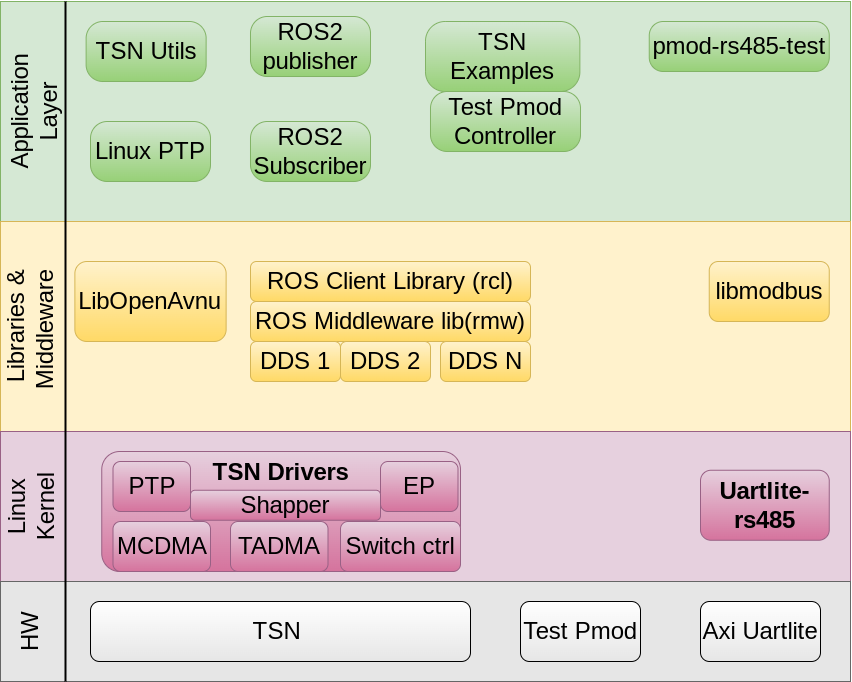

Software Architecture of the Platform¶
Introduction¶
This section describes software components involved in the design and their relation with each other. The application requires hw platform as described in Hardware Architecture of the Platform for the stack explained in this section to work.
Following diagram illustrate top level architecture and arrangement of various software components
]
Operating System: Xilinx Linux kernel + Ubuntu env
Drivers:
Uart-rs485
set of tsn related drivers
Libraries and Middleware
ModBus
ROS2
DDS
Applications
tsn configurations utilities
tsn raw package application example
Linux ptp for clock sync
Pmod test application over rs485
The details of each individual component can be obtained though the reference at the end of this section. The scope of this document is with respect to what is being demonstrated through the example application.
Following list describes the top level application functions:
TSN demonstration
ROS demonstration
Modbus and RS485 demonstration
TSN¶
Time-Sensitive Networking (TSN) is a set of standards under development by the Time-Sensitive Networking task group of the IEEE 802.1 working group. This standards allows low latency transmission and time guaranteed packet delivery.
Driver¶
Set of drivers used for the TSN solution is enabled in the staging area under linux-xlnx/drivers/staging/xilinx-tsn. These set of drivers provides tsn capability like vlan,scheduled traffic, best effort traffic, ptp, QBV shaper, etc. using standard ethernet framework and ip route tools.
For details of the device tree for the driver can be found in the kernel documentation at linux-xlnx/Documentation/devicetree/bindings/net/xilinx*tsn*.txt
Refer Xilinx TSN Solution for details of various features supported by xilinx tsn drivers.
ROS2¶
Robot Operating System (ROS) is a set of open source algorithms, hardware driver, software and tools for developing robot control software. Contrary to it’s name, ROS isn’t an operating system but it is a library.
In a full fledged ROS environment sensors in robots, motion controllers, detection and navigation algorithms, etc are all components of this distributed ROS architecture. Each individual component is referred as Node. ROS nodes (and applications) typically communicate through interfaces of one of three types: messages, services and actions. ROS 2 uses a simplified description language, the interface definition language (IDL), to describe these interfaces. This description makes it easy for ROS tools to automatically generate source code for the interface type in several target languages.
Topics are the elements of ROS2 that acts as bus for nodes to exchange messages. In a simplest use case, message is published by a node on a given topic. Anyone subscribed to that topic can receive the message.

A node may publish data to any number of topics and simultaneously have subscriptions to any number of topics.

These nodes can be on the same system or distributed across systems. The biggest improvement ROS2 provides over ROS1 is the how the communication is handled across various systems. ROS2 adopts the decentralized (as opposed to centralized in ROS1) DDS middleware. Instead of implementing its own DDS layer, ROS2 provides a middleware abstraction layer (rmw), which can be plugged on any standard DDS implementation.
DDS¶
ROS 2 is built on top of DDS/RTPS as its middleware, which provides discovery, serialization and transportation. DDS is an end-to-end middleware that provides features which are relevant to ROS systems, such as distributed discovery (not centralized like in ROS 1) and control over different “Quality of Service” options for the transportation. There are many independent DDS implementation by various vendors. ROS2’s rmw abstraction allows to easily switch or adapt different implementations.
Following are supported DDS implementation for ROS2 humble release:
eProsima Fast DDS (Default RMW)
Eclipse Cyclone DDS
RTI Connext DDS
GurumNetworks GurumDDS
For this application, two separate nodes one running as publisher and other as subscriber on separate KR260 communicates over TSN network. The underlying middleware is default to FastDDS.
DDS configuration¶
For demonstration, the message is sent as a scheduled traffic. The DDS is configured allow the message only from the whitelisted interface which is set to have vlan qos mapping for all the outgoing traffic to be set as Scheduled Traffic (PCP=4).
e.g.
ip link add link ep name ep.40 type vlan id 40 egress-qos-map 0:4
ip addr add 111.222.0.10/24 broadcast + dev ep.40
Now this new interface can be added to whitelist of the dds configuration for required topic through the xml configuration.
<transport_descriptor>
<transport_id>UdpVLANTransport</transport_id>
<type>UDPv4</type>
<interfaceWhiteList>
<address>111.222.0.10</address>
</interfaceWhiteList>
</transport_descriptor>
For more information various possible configuration refer fast dds configuration.
Modbus and RS485¶
Modbus is open-source, client/server communication protocol widely used in remote monitoring, control and robotic applications. Because of its simple message structure, it is very easy to deploy. It supports multiple devices to be connected on the same bus and uses polling mechanism to acquire the status of each device on the bus.
Modbus data can be carried over serial ports or ethernet interface.
Modbus RTU (remote terminal unit), used in serial communication, is the most common implementation for modbus supporting devices. Modbus RTU makes use of a compact, binary representation of the data for protocol communication. The RTU format follows the commands/data with a cyclic redundancy check checksum as an error check mechanism to ensure the reliability of data.
RS485 is a widely used serial communication standard, especially between the devices communicating over Modbus RTU protocol.
Modbus RTU frame format¶
| Name | Length (bits) | Function |
|---|---|---|
| Start | 3.5 x 8 | At least 3+1⁄2 character times (28 bits) of silence (mark condition) |
| Address | 8 | Station address |
| Function | 8 | Indicates the function code e.g. "read coils" |
| Data | n × 8 | Data + length will be filled depending on the message type |
| CRC | 16 | Cyclic redundancy check |
| End | 3.5 x 8 | At least 3+1⁄2 character times (28 bits) of silence (mark condition) between frames |
Linux driver¶
In this application, uartlite IP in PL is patched to support RS485, by enabling/connect the DE line. To support this there is uartlite-rs485 driver in the staging area. This driver is copy of original uartlite driver with additional advertised capability of RS485 support. No additional changes are required for the give IP patch.
This new driver requires different compatibility string and hence the original device tree node’s compatible string needs to be overwritten as below.
&axi_uartlite_0 {
compatible = "xlnx,axi-uartlite-rs485";
};
Modbus Library¶
libmodbus is a free software library to send/receive data according to the Modbus protocol. This library is written in C and supports RTU (serial) and TCP (Ethernet) communications. It is available on most of the platforms (OS) include Linux, FreeBSD, Mac and Windows.
Once required communication channel is established, the library will take care of converting the regular message in modbus format.
Application¶
To demonstrate Modbus & RS485 capability an example C application, pmdo-rs485-test, is provided. The target device is modbus capable temperature sensor, connected over pmod interface. See connection and hardware details in Deployment and Hardware Arch sections.
pmod-rs485-test is the application that uses libmodbus to:
Create modbus RTU channel over uartlite-rs485 device
Adjust response time
Read Temperature and Humidity values from the sensor.
References¶
Xilinx Uartlite Driver (Original driver)